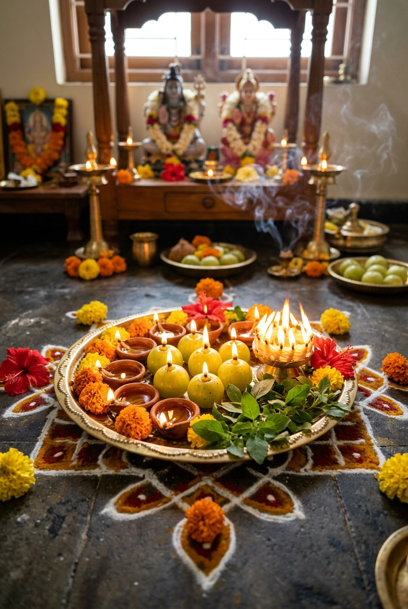
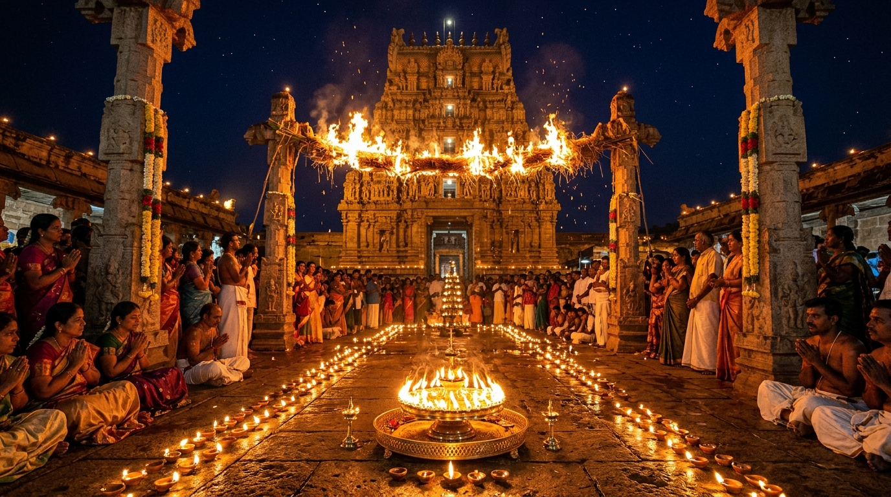
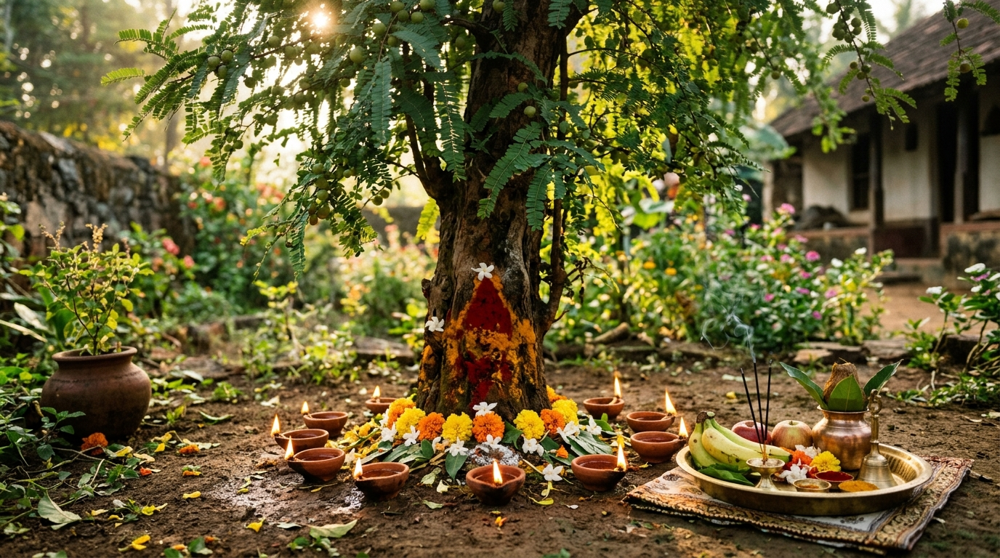
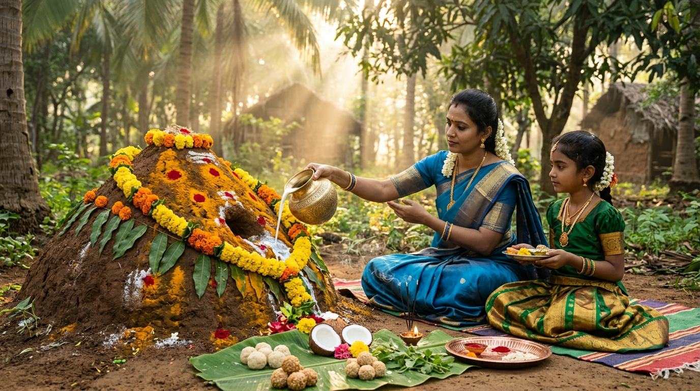
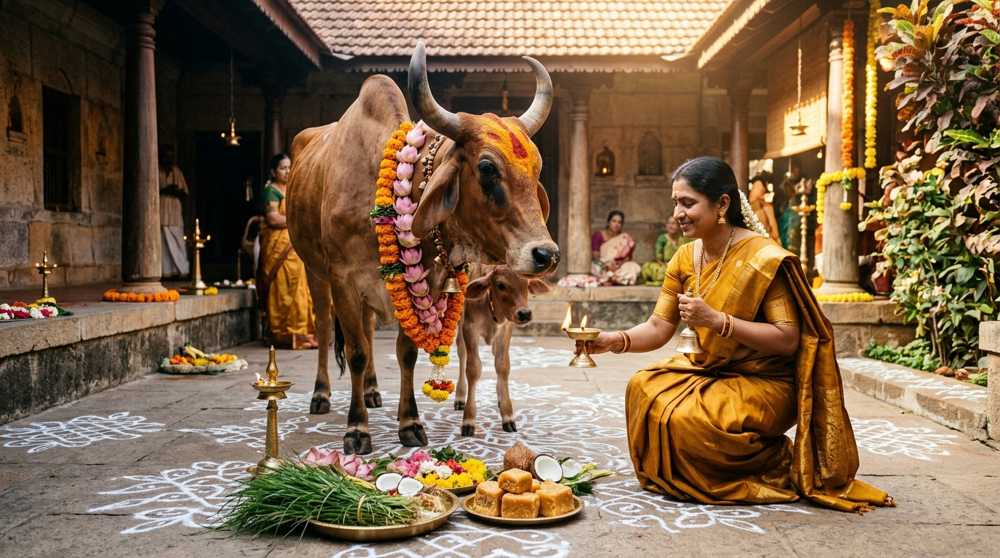

కార్తీక మాసం అంటే కేవలం ఉపవాసాలు, గుళ్లకు వెళ్లడం మాత్రమే కాదు. ఇది ప్రకృతిని ప్రేమించడం (ఉసిరి, తులసి ఆరాధన), మూగజీవాలను ఆదరించడం (గోపూజ, నాగుల చవితి), కుటుంబ అనుబంధాలను గౌరవించడం (భగినీ హస్త భోజనం), మరియు తోటి మానవుల ఆకలి తీర్చడం (అన్నదానం) అనే నాలుగు మూలస్తంభాలపై నిలిచిన మహోన్నత సనాతన జీవన విధానం.
- సాయంకాలం సంధ్యా సమయంలో ఆకాశ దీపం మరియు తులసి కోట దీపం వెలిగించడం
- ఉసిరి చెట్టు మొదట్లో అష్టదిక్కులా ఎనిమిది దీపాలు వెలిగించి ధాత్రీ పూజ చేయడం
- కార్తీక శుద్ధ విదియ (యమ ద్వితీయ) నాడు తోబుట్టువుల ఇంట ప్రేమతో భోజనం చేయడం
- కార్తీక సోమవారాలు మరియు పౌర్ణమి నాడు శివాభిషేకం, 365 వత్తుల దీపారాధన
- కనీసం ఒక్కరికైనా మనస్ఫూర్తిగా స్వయంగా వండి ఆప్యాయంగా అన్నదానం చేయడం
- శివ-కేశవుల మధ్య భేద భావాన్ని చూపించడం లేదా వాదోపవాదాలు చేయడం
- దీపారాధనను కేవలం అలంకారంగా భావించి, భక్తి శ్రద్ధలు లేకుండా వదిలేయడం
- తోటి మానవులను చిన్నచూపు చూస్తూ గుడిలో పూజలు చేయడం
🪔 కార్తీక మాసం ఎందుకు అంత విశిష్టమైనది?
డైరెక్ట్ సారాంశం (Bottom Line Up Front): సనాతన ధర్మంలో చాతుర్మాస్య వ్రతంలో చివరిదైన కార్తీక మాసం సమస్త మాసాలలోకెల్లా అత్యంత శ్రేష్ఠమైనదిగా స్కాంద పురాణం ప్రవచించింది:
న చ వేదసమం శాస్త్రం న తీర్థం గంగయా సమమ్ ||"
ఈ మాసంలో చేసే ఒక్క దీపారాధన అశ్వమేధ యాగ ఫలాన్ని, ఒక్క ఉసిరి పూజ సర్వ రోగ నివారణను, తోబుట్టువులతో కలిసి చేసే భగినీ హస్త భోజనం అపమృత్యు దోష నివారణను, అన్నదానం మోక్ష ప్రాప్తిని ప్రసాదిస్తాయి.

📌 పిన్ సేవ్ చేయండి📑 ఈ సమగ్ర ఆధ్యాత్మిక గైడ్లో ముఖ్యాంశాలు
📜 పురాణ ప్రమాణాలు & శాస్త్ర వాక్యాలు
ఈ బ్లాగ్ పోస్ట్లోని ఆధ్యాత్మిక అంశాలు బ్రహ్మశ్రీ చాగంటి కోటేశ్వరరావు గారి అమృత ప్రవచనాలతో పాటు ప్రాచీన సనాతన గ్రంథాల నుండి పరిశోధనాత్మకంగా స్వీకరించబడ్డాయి:
- స్కాంద పురాణం (కార్తీక ఖండం): శివకేశవ పూజా విధానం, జ్వాలాతోరణ విశిష్టత మరియు ఆకాశ దీప దాన ఫలితాలు.
- పద్మ పురాణం: ఉసిరి వృక్షం (ధాత్రీ లక్ష్మి) ఆవిర్భావం, తులసి కళ్యాణ వైభవం మరియు దామోదర పూజ.
- హరివంశం & విష్ణు పురాణం: హరిహర అభేద తత్త్వం మరియు సృష్టి లయకారుల ఏకత్వ విశ్లేషణ.
- గరుడ పురాణం & భవిష్యోత్తర పురాణం: యమ ద్వితీయ (భగినీ హస్త భోజనం) ప్రాశస్త్యం మరియు అపమృత్యు హరణం.
🪔 1. పవిత్రమైన దీపారాధన – ఆకాశ దీపం & జ్వాలా తోరణం
దీపం అంటే కేవలం బాహ్య ప్రపంచాన్ని చీకటి నుండి వెలుగులోకి తెచ్చే సాధనం మాత్రమే కాదు. అది సాక్షాత్తు పరబ్రహ్మ స్వరూపం మరియు జ్ఞానాన్ని ప్రసాదించే గురు స్వరూపం. "దీపజ్యోతిః పరబ్రహ్మ దీపజ్యోతిర్ జనార్దనః | దీపో హరతు మే పాపం సంధ్యాదీప నమోఽస్తుతే ||" అని మన సంధ్యా ప్రార్థన.
కార్తీక మాసంలో సూర్యుడు తులారాశిలో నీచ స్థితిలో ప్రవేశించడం వల్ల భూమిపై చీకటి మరియు శీతల తీవ్రత పెరుగుతాయి. ఈ సమయంలో నిత్యం వెలిగించే ప్రమిదలు ప్రకృతికి, జీవుల మనస్సులకు తేజస్సును అందిస్తాయి.
ఆకాశ దీపం ప్రాశస్త్యం: ఈ మాసంలో సాయం సంధ్యా సమయంలో ఇంటి మేడ మీద లేదా ధ్వజస్తంభం వంటి ఎత్తైన ప్రదేశంలో వెదురు గడకు రంధ్రాలు ఉన్న కుండలో దీపాన్ని ఉంచి వేలాడదీస్తారు. ఆకాశ మార్గంలో పితృలోకానికి లేదా పుణ్యలోకాలకు ప్రయాణించే పితృదేవతలకు, దేవతా గణాలకు ఈ దీపం దారి చూపుతుందని శాస్త్రం చెబుతోంది.
ప్రదీపం తే ప్రయచ్ఛామి నమోఽనంతాయ వేధసే ||"

📌 సేవ్ చేసుకోండి🌿 2. ఆరోగ్యాన్ని, ఐశ్వర్యాన్ని ఇచ్చే ఉసిరి (ధాత్రీ) పూజ
శరదృతువు చలిగాలుల వల్ల మానవ శరీరంలో వాత, పిత్త, కఫ త్రిదోషాలు ప్రకోపిస్తాయి. వీటన్నింటినీ సమతుల్యం చేసి మన ఆయుష్షును, రోగనిరోధక శక్తిని పెంచే అమృత ఫలం ఉసిరికాయ. క్షీరసాగర మథన సమయంలో విష్ణుమూర్తి కంటి నుండి జారిన ఆనంద భాష్పాల నుండి ఉసిరి వృక్షం జన్మించిందని పురాణాలు చెబుతున్నాయి.
ఉసిరి చెట్టులో సాక్షాత్తు లక్ష్మీదేవి, శ్రీమహావిష్ణువు మరియు ముక్కోటి దేవతలు నివసిస్తారు. కార్తీక మాసంలో ఉసిరి చెట్టు మొదట్లో పసుపు, కుంకుమలు సమర్పించి, అష్టదిక్పాలకుల అనుగ్రహం కోసం ఎనిమిది దిక్కులా ఎనిమిది మట్టి ప్రమిదలలో దీపాలు వెలిగించాలి.

📌 సేవ్ చేసుకోండిపుత్ర పౌత్ర ప్రదే దేవీ త్వాం భజామి నమః సదా ||"
🤝 3. మానవ సంబంధాలకు ప్రతీక – యమ ద్వితీయ (భగినీ హస్త భోజనం)
కార్తీక మాసం కేవలం దేవుడి పూజలకే పరిమితం కాదు; ఇది రక్తసంబంధాలను, ముఖ్యంగా అక్కాచెల్లెళ్లు మరియు అన్నదమ్ముల మధ్య అనురాగాన్ని కలకాలం నిలిపే మహోన్నత మాసం. కార్తీక శుద్ధ విదియను 'యమ ద్వితీయ' లేదా 'భగినీ హస్త భోజనం' అని పిలుస్తారు.
పురాణ గాథ ప్రకారం, యమధర్మరాజు తన విధుల్లో ఎంత తీరిక లేకుండా ఉన్నప్పటికీ, కార్తీక శుద్ధ విదియ నాడు తన సోదరి అయిన యమునా నది ఇంటికి వెళ్లి, ఆమె ప్రేమతో స్వయంగా వండి వడ్డించిన భోజనాన్ని స్వీకరించాడు. ఆ ఆనందంలో యమునకు దివ్యమైన కానుకలను అనుగ్రహించాడు.
ఆధునిక ఉరుకుల పరుగుల జీవితంలో విడిపోతున్న కుటుంబాలను ఒక్కటి చేయడానికి మన పూర్వీకులు అందించిన అద్భుతమైన సంప్రదాయం ఇది. వివాహమై అత్తవారింటికి వెళ్ళిన సోదరి యోగక్షేమాలను తెలుసుకోవడం, ఆమె చేతి ముద్దను అమృతంలా స్వీకరించి ఆమె పాదాలకు నమస్కరించడం మన హైందవ సంస్కృతికే మకుటాయమానం.
🐍 4. పగను ప్రేమతో గెలిచే పండుగ – నాగుల చవితి
సృష్టిలోని ప్రతి జీవిలోనూ ఈశ్వరుణ్ణి దర్శించే ఏకైక ధర్మం సనాతన ధర్మం. కార్తీక శుద్ధ చవితి నాడు జరుపుకునే నాగుల చవితి పండుగ ప్రకృతి పట్ల మనకున్న కృతజ్ఞతను చాటుతుంది.
రైతు పండించే పంటలను నాశనం చేసే ఎలుకలు, పురుగుల నుండి కాపాడే క్షేత్రపాలకుడు సర్పం. అందుకే పామును కేవలం విషజీవిగా ద్వేషించకుండా, శివుడి కంఠాభరణంగా, శ్రీమన్నారాయణుడి ఆదిశేషుడిగా భావించి పుట్టలో పాలు, చలిమిడి, చిమ్మిలి, గుడ్ల నైవేద్యం సమర్పిస్తాం.

📌 సేవ్ చేసుకోండి🐄 5. గోపూజ మహాత్మ్యం – గోపాష్టమి & కామధేను ఆరాధన
కార్తీక శుక్ల అష్టమిని 'గోపాష్టమి' అని, బహుళ ద్వాదశిని 'గోవత్స ద్వాదశి' అని పిలుస్తారు. శ్రీకృష్ణ పరమాత్మ స్వయంగా గోవులను మేపడానికి మొదటిసారి అరణ్యానికి వెళ్లిన పరమ పావన దినం గోపాష్టమి.
సకల వేదాలు, సమస్త పుణ్య నదులు, ముక్కోటి దేవతలు కొలువైన ప్రత్యక్ష కామధేనువు గోమాత. ఆవు శరీరంలోని ప్రతి అణువులోనూ ఒక దివ్య శక్తి దాగి ఉందని అధర్వణ వేదం పేర్కొంది.

📌 సేవ్ చేసుకోండిగోవును పసుపు కుంకుమలతో అలంకరించి, తాజా గడ్డి లేదా అరటిపండ్లు తినిపించి, భక్తితో మూడు ప్రదక్షిణలు చేయడం వల్ల సమస్త గ్రహదోషాలు తొలగిపోతాయి. గోధూళి సోకిన ఇల్లు ఎల్లప్పుడూ ఆనంద నిలయంగా, లక్ష్మీ నివాసంగా వర్ధిల్లుతుంది.
🔱 6. శివ-కేశవ అభేద తత్త్వం – హరిహర సామరస్య సందేశం
కార్తీక మాసపు అసలైన అంతరాత్మ "శివకేశవ అభేదం". శైవ, వైష్ణవ విభేదాలను సమూలంగా తుడిచిపెట్టి, హరిహరులు ఇరువురూ ఒక్కటేనని చాటిచెప్పే దివ్య మాసం ఇది.
శివస్య హృదయం విష్ణుః విష్ణోశ్చ హృదయం శివః ||
యథా శివమయో విష్ణురేవం విష్ణుమయః శివః |
యథాంతరం న పశ్యామి తథా మే స్వస్తిరాయుషి ||"
🍚 7. అత్యంత ఫలప్రదమైన అన్నదానం – ప్రత్యక్ష భగవత్ సేవ
"అన్నం బ్రహ్మేతి వ్యజానాత్" — అన్నమే సాక్షాత్తు పరబ్రహ్మ స్వరూపం. సనాతన ధర్మంలో ఎన్ని దానాలు ఉన్నప్పటికీ, అన్నదానానికి ఉన్న విశిష్టత సాటిలేనిది.
ధనమో, బంగారమో దానం చేస్తే తీసుకున్న వ్యక్తి మనసులో అసంతృప్తి ఉండవచ్చు. కానీ ఆకలితో అలమటించే వ్యక్తికి కడుపునిండా అన్నం పెట్టినప్పుడు, వారు పొందే తృప్తి, ముఖంలో కనిపించే ప్రశాంతత సాక్షాత్తు ఆ దేవుడికే చేరుతుంది. కార్తీక మాసంలో అతిథి రూపంలో భగవంతుడే వస్తాడని నమ్మి, స్వయంగా ప్రేమతో వండి ఒక్క ఆకలి గొన్న జీవికైనా అన్నం పెట్టడం కంటే గొప్ప యాగం మరొకటి లేదని చాగంటి గారు స్పష్టం చేశారు.
📅 కార్తీక మాస ముఖ్య తిథులు & ఆచరించవలసిన విధులు
కార్తీక మాసంలో వచ్చే అత్యంత విశిష్టమైన తిథులు మరియు వాటి ఆధ్యాత్మిక ఫలితాల పట్టిక క్రింద ఇవ్వబడింది:
| పవిత్ర తిథి | విశేష పర్వదినం | చేయవలసిన ముఖ్యమైన పూజ / విధి | లభించే పుణ్య ఫలం |
|---|---|---|---|
| కార్తీక శుద్ధ పాడ్యమి | కార్తీక మాసారంభం | ప్రాతఃకాల స్నానం, నిత్య దీపారాధన ప్రారంభం | సమస్త పాప ప్రక్షాళన |
| కార్తీక శుద్ధ విదియ | యమ ద్వితీయ / భగినీ హస్త భోజనం | సోదరి ఇంటికి వెళ్లి భోజనం చేయడం, కానుకలు ఇవ్వడం | అపమృత్యు దోష నివారణ, దీర్ఘాయుష్షు |
| కార్తీక శుద్ధ చవితి | నాగుల చవితి | పుట్టలో పాలు పోయడం, నాగదేవత పూజ | సర్పదోష నివారణ, వంశాభివృద్ధి |
| కార్తీక శుద్ధ అష్టమి | గోపాష్టమి | గోపూజ, గోమాతకు గ్రాసం తినిపించడం | ముక్కోటి దేవతల అనుగ్రహం, లక్ష్మీ కటాక్షం |
| కార్తీక శుద్ధ ఏకాదశి | ప్రబోధినీ ఏకాదశి / ఉత్థాన ఏకాదశి | ఉపవాస దీక్ష, హరిజాగరణ, శ్రీమహావిష్ణు మేల్కొలుపు | మోక్షప్రాప్తి, వైకుంఠ ప్రాప్తి |
| కార్తీక శుద్ధ ద్వాదశి | క్షీరాబ్ధి ద్వాదశి / చిలుక ద్వాదశి | తులసీ-ధాత్రీ (ఉసిరి) కళ్యాణం, దీపోత్సవం | అఖండ సౌభాగ్యం, దాంపత్య సుఖం |
| కార్తీక పౌర్ణమి | మహా కార్తీక పూర్ణిమ | 365 వత్తుల దీపం, జ్వాలాతోరణ దర్శనం, నదీ స్నానం | సంవత్సర దీపారాధన ఫలం, యమబాధా విముక్తి |
| కార్తీక బహుళ అమావాస్య | పోలి స్వర్గం | అరటి దొన్నెలలో దీపాలు వెలిగించి నీటిలో వదలడం | స్త్రీలకు మోక్ష ప్రాప్తి, అక్షయ పుణ్యం |
🕯️ కార్తీక దీపారాధన రకాలు & వాటి ఆధ్యాత్మిక ఫలితాలు
కార్తీక మాసంలో వెలిగించే వివిధ దీపాలు మరియు వాటికున్న విశేష ఫలాల వివరాలు:
| దీపారాధన రకం | వెలిగించే విధానం & ప్రదేశం | శాస్త్రోక్త ఫలితం |
|---|---|---|
| ఉసిరికాయ దీపం (ధాత్రీ దీపం) | ఉసిరికాయపై నెయ్యి లేదా నువ్వుల నూనెతో వత్తి వేసి వెలిగించడం | లక్ష్మీదేవి అనుగ్రహం, దారిద్ర్య నాశనం |
| ఆవు నెయ్యి దీపం | మట్టి ప్రమిద లేదా ఇత్తడి ప్రమిదలో ఆవు నెయ్యితో వెలిగించడం | గృహంలో పాజిటివ్ ఎనర్జీ, సర్వ రోగ నివారణ |
| నువ్వుల నూనె దీపం | శివాలయంలో లేదా ఇంట్లో శనిదోష నివారణకు వెలిగించడం | సమస్త శని గ్రహ దోషాలు, పీడల నివారణ |
| 365 వత్తుల గుత్తి దీపం | పౌర్ణమి లేదా సోమవారం నాడు ఆవు నేతితో వెలిగించడం | సంవత్సర కాలపు నిత్య పూజా ఫలం |
| ఆకాశ దీపం | ఇంటి పైకప్పుపై ఎత్తైన గడకు వేలాడదీసి వెలిగించడం | పితృదేవతల శాంతి, అనంతమైన విష్ణుభక్తి |